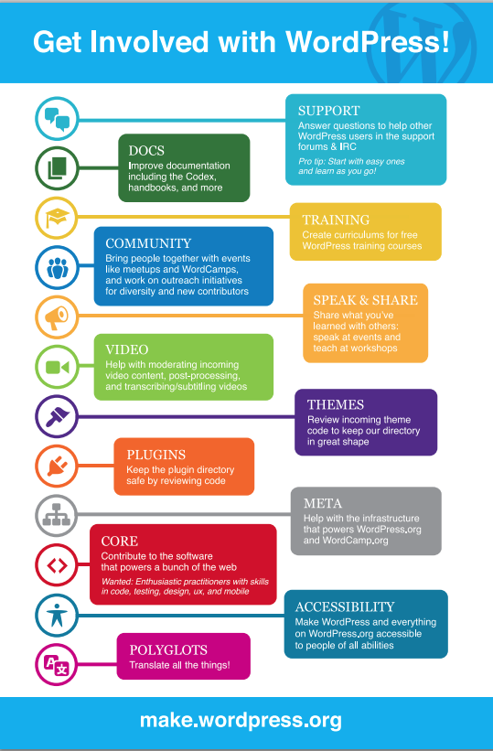
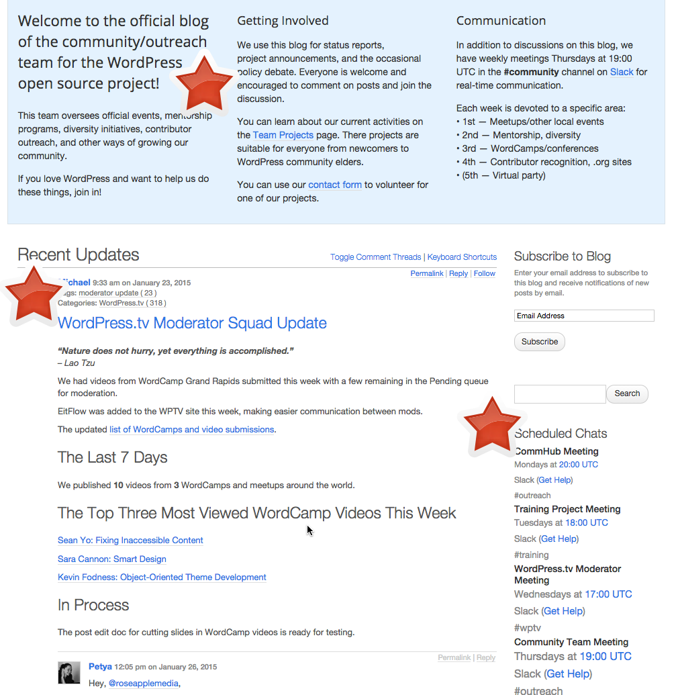
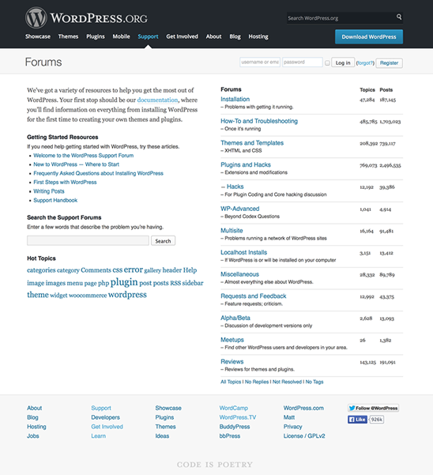
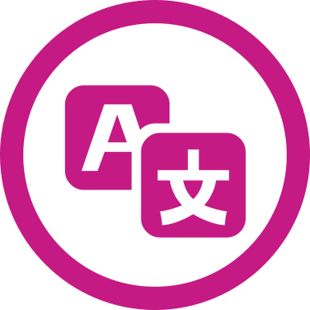
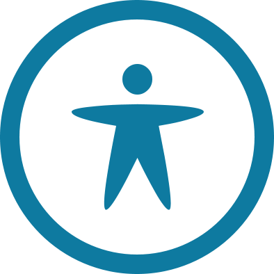
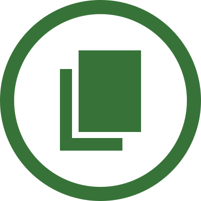

Non-code ways to contribute to WordPress
Get Involved
Courtney O'Callaghan, Tracy Levesque, Beth Soderberg, Julie Kuehl, Courtney Robertson

Coding
Non-Coding
- Community
- WordCamps
- Speak and Share
- Support (forums & IRC)
- WordPress TV
- Captioning
- Polyglots
- Accessibility
- Docs
- Training

Community
Community
This team oversees official events, mentorship programs, diversity initiatives, contributor outreach, and other ways of growing our community.
Volunteer @ WordCamp
- Tickets & registration
- Videographer
- Sound system
- Speaker wrangler
- Sponsor wrangler
- Lead organizer
- Happiness bar
Speak & Share
- Support Forums
- WordCamp
- Meetup
- Workshops
- Blog about WordPress
Support
Support
Why
To answer questions and help people learn about WordPress.
Support
How
- Helping in the WordPress Support Forums by answering questions
- Helping in the #wordpress IRC channel
- Providing guidance in general – the majority of the users in the WP forums are in over their heads and they need a little guidance
- Working with the Documentation team to improve the support topics in the Codex

Support
Resources
- Support on Make.WordPress.org
- Support Handbook
- WP-Forums email list
- Weekly team meeting is on Thursdays at 17:00 UTC (12 noon eastern) in #forums on Slack.
- James Huff on Support at WordCamp San Francisco 2014
WordPress.tv
WordPress.tv
Why
To make videos of WordCamp sessions, WordPress Meetup presentations, and other WordPress related videos available to the world via WordPress.tv.
WordPress.tv
How
- Moderating videos
- Captioning videos
- Communicate with video creators
- WordPress.tv blog
- Documentation for submitters, moderators, subtitlers
Submitting Videos
Resources
Moderating Videos
Why
- Ensure video and audio quality
- Make sure videos fit within WordPress community guidelines
- Make sure content is open source friendly and GPL compliant
Moderating Videos
How
- Locate or are assigned a video to moderate
- Review the video
- Edit and approve supplied video information
- Format the post and attachment titles
- Approve/add categories and tags
- Edit the video description and add slides
- Select a video thumbnail
- Finalize for publication
Moderating Videos
Resources
- WordPress TV Moderator Handbook
- Weekly team meeting at 17:00 UTC (12 noon eastern) in the #wptv channel in Slack
- Jerry Bates on WordPress.tv at WordCamp San Francisco 2014
Captioning Videos
Why
- Deaf and Hard-of-hearing folks
- Non-English speakers
- Noisy situations
Captioning Videos
How
- Create an Amara account
- Choose and copy med video link from wordpress.tv
- Caption video with Amara
- Upload caption file to wordpress.tv
Captioning Videos
Demo
Captioning Videos
Resources
Polyglots
Polyglots
Speak a language other than English? Join the Polyglots team!
Polyglots
Why
English is not the native language for the majority of WordPress users.
Polyglots
How
Help translate WordPress and related projects.
Polyglots
How
- Create a WordPress.org account
- Go to translate.wordpress.org choose a project and start translating!
Polyglots
Resources
Accessibility
Accessibility
- Ensure the continued improvement of WordPress accessibility
- Develop WordPress Accessibility Docs
- Theme Review Accessibility Guidelines
- Theme Developer Handbook: Accessibility
- WordPress Codex: Accessibility
- Test for accessibility
- Slack: #accessibility, chat: Wed 19:00 UTC
Documentation
Docs
- The Codex
- Developer handbooks
- Contributor handbooks
- The code reference
- WordPress admin help tabs
- Some of the UI text
- Slack: #docs, chat Thurs 18:00 UTC
Contributing to the Codex
- Codex is the original documentation source for the project
- Contains most of the documentation that has been created to this point
To help edit the Codex
- Anyone can edit the Codex, as long as you have an account
- http://codex.wordpress.org/Codex:Contributing
- Look for Edit in the sidebar (it brings up the page in edit mode)
- Uses Markdown
- Add a reason and check the appropriate boxes
- Save
Codex edits are often
- Typos
- Errors
- New release information
- More code samples
- New examples
In Trac
- Trac = https://core.trac.wordpress.org/
- look for tickets with a focus on docs (https://core.trac.wordpress.org/focus/docs)
- query "docs"
- query "needs-docs"
Handbooks
- Plugin developer handbook
- Theme developer handbook
- Contributor handbooks
- Make Docs
- Make Core
To get involved with the handbooks
- https://make.wordpress.org/docs/ > Handbooks > Getting Started
- Spreadsheets show what need to be done
- Ask in the WordPress Slack channel #docs
- Ben Lobaugh for plugin developer handbook
- Eric Amundson for theme developer handbook
- Attend the weekly chat (Slack #docs channel)
Code Reference
- https://developer.wordpress.org/
- The two developer handbooks will be part of it
- The rest is inline documentation which is part of the source code and has to be done with a patch in Trac
- If you want to help with inline documentation contact Drew James, who is part of the core team
Patching the UI tabs
- has to be patched in core
- instructions on how to get set up to do that in the (Docs team?) handbook on make.wordpress.org
- UI text
- https://make.wordpress.org/docs/handbook/tutorials-and-guides/patching-core-help-tabs/
Future Plans
- Build a support hub
Training
Training
Why
To create downloadable lesson plans and related materials (curricula) for instructors to use in a live teaching environment.
A lesson plan is a teacher's detailed description of the course of instruction for one class.
Training
How
- Write new lesson plans
- Copyedit content for grammar and continuity
- Design visual assets
- TEST beta plans in live environment
Training
Resources
- Make WordPress Training site
- List of available Lesson Plans
- Join our weekly chat: Tuesday 18:00-19:00 UTC, Slack #training channel